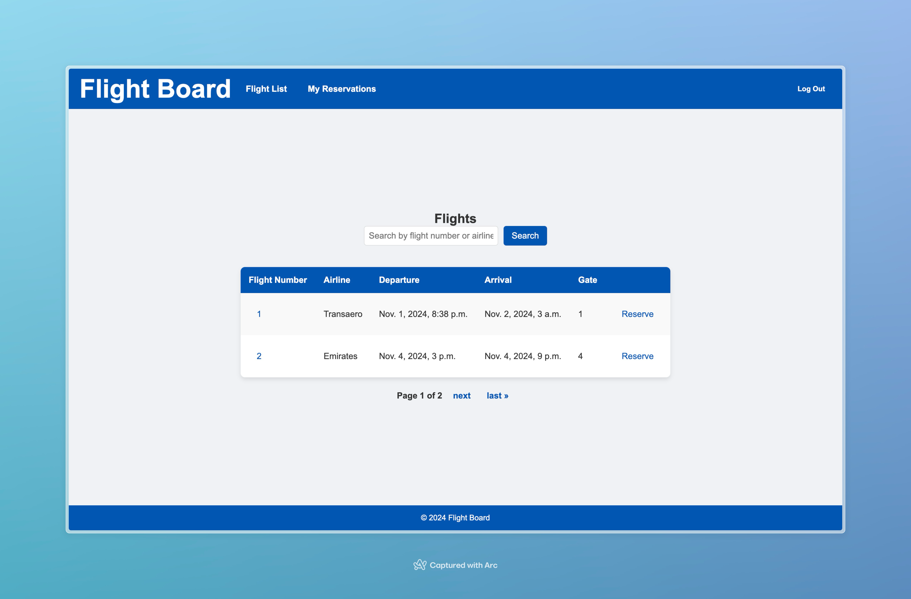
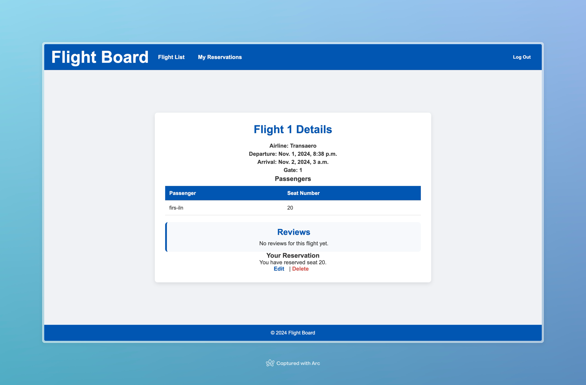

Flights Board
Обзор
Flights Board — это Django-приложение, предоставляющее платформу для просмотра информации о рейсах, бронирования мест, управления бронированиями и добавления отзывов о рейсах. В приложении реализована регистрация пользователей и административная панель для управления рейсами.
Задание:
Реализовать веб сервис, в соответствии с вариантом из задания
Вариант 3: Табло отображения информации об авиаперелетах
Хранится информация о номере рейса, авиакомпании, отлете, прилете, типе (прилет, отлет), номере гейта. Необходимо реализовать следующий функционал: - Регистрация новых пользователей. - Просмотр и резервирование мест на рейсах. Пользователь должен иметь возможность редактирования и удаления своих резервирований. - Администратор должен иметь возможность зарегистрировать на рейс пассажира и вписать в систему номер его билета средствами Django-admin. - В клиентской части должна формироваться таблица, отображающая всех пассажиров рейса. - Написание отзывов к рейсам. При добавлении комментариев, должны сохраняться дата рейса, текст комментария, рейтинг (1-10), информация о комментаторе.
Дополнительные задания: - Реализовать меню - Реализвать пагинацию страниц - Внедрить поиск по объектам, с которыми настроена пагинация
Содержание
- Установка
- Модели
- Аутентификация пользователей
- Управление рейсами
- Управление бронированиями
- Отзывы о рейсах
- Поиск и пагинация
- Дополнительные задания
Установка
-
Клонирование репозитория
bash git clone <repository-url> cd flights_board -
Установка зависимостей
bash pip install -r requirements.txt -
Настройка базы данных В файле
settings.pyнастройте базу данных PostgreSQL:python DATABASES = { 'default': { 'ENGINE': 'django.db.backends.postgresql', 'NAME': 'postgres', 'USER': 'postgres', 'PASSWORD': 'postgres', 'HOST': 'localhost', 'PORT': '5431', } } -
Применение миграций
bash python manage.py migrate -
Запуск сервера разработки
bash python manage.py runserver
Модели
Основные модели проекта находятся в flights_board/flights/models.py:
- Flight (Рейс): Хранит информацию о рейсе, включая номер, авиакомпанию, время вылета и прилета, номер гейта.
- Reservation (Бронирование): Связывает пользователей с конкретными рейсами, указывая место и номер билета.
- Review (Отзыв): Позволяет пользователям оставлять отзыв о рейсе, включая текст, рейтинг и дату.
Пример модели Flight:
class Flight(models.Model):
flight_number = models.CharField(max_length=10)
airline = models.CharField(max_length=50)
departure = models.DateTimeField()
arrival = models.DateTimeField()
gate_number = models.CharField(max_length=5)
Аутентификация пользователей
- Регистрация:
/signup/, использует формуUserCreationForm. - Вход/Выход:
/login/для входа, POST-запрос по/logout/для выхода.
Управление рейсами
Список рейсов
Главная страница / отображает список рейсов с возможностью поиска по номеру или авиакомпании.

Детали рейса
Страница с деталями рейса доступна по адресу /flight/<flight_id>/, отображая основную информацию, пассажиров и отзывы.

Управление бронированиями
- Бронирование места —
/flight/<flight_id>/reserve/с проверкой занятости места. - Редактирование бронирования —
/reservation/<reservation_id>/edit/. - Удаление бронирования — POST-запрос по
/reservation/<reservation_id>/delete/.
Пример кода для бронирования места:
@login_required
def reserve_seat(request, flight_id):
flight = get_object_or_404(Flight, id=flight_id)
if request.method == 'POST':
seat_number = request.POST.get('seat_number')
if Reservation.objects.filter(flight=flight, seat_number=seat_number).exists():
return render(request, 'reserve_seat.html', {
'flight': flight,
'error': "Это место уже занято. Пожалуйста, выберите другое."
})
Reservation.objects.create(user=request.user, flight=flight, seat_number=seat_number)
return redirect('my_reservations')
return render(request, 'reserve_seat.html', {'flight': flight})
Отзывы о рейсах
Пользователи могут оставлять отзывы для каждого рейса, включая: - Рейтинг (от 1 до 10) - Текст комментария - Дата и информация о комментаторе
Форма добавления отзыва:
@login_required
def add_review(request, flight_id):
flight = get_object_or_404(Flight, id=flight_id)
if request.method == 'POST':
rating = request.POST['rating']
comment_text = request.POST['comment_text']
Review.objects.create(flight=flight, user=request.user, rating=rating, comment_text=comment_text)
return redirect('flight_list')
return render(request, 'add_review.html', {'flight': flight})
Поиск и пагинация
В приложении реализованы поиск и пагинация на страницах списка рейсов и личных бронирований.
Пример реализации поиска в представлении списка рейсов:
class FlightListView(ListView):
model = Flight
template_name = 'flight_list.html'
paginate_by = 2
def get_queryset(self):
query = self.request.GET.get('q')
queryset = Flight.objects.all()
if query:
queryset = queryset.filter(
flight_number__icontains=query
) | queryset.filter(
airline__icontains=query
)
return queryset
Дополнительные задания
Меню
На каждой странице отображается навигационное меню с ссылками на список рейсов, регистрацию, вход/выход и личные бронирования пользователя.
Пример меню в шаблоне base.html:
<nav class="main-nav">
<ul class="navbar-left">
<li><a href="{% url 'flight_list' %}">Список рейсов</a></li>
{% if user.is_authenticated %}
<li><a href="{% url 'my_reservations' %}">Мои бронирования</a></li>
{% endif %}
</ul>
<ul class="navbar-right">
{% if user.is_authenticated %}
<li>
<form action="{% url 'logout' %}" method="post" class="logout-form">
{% csrf_token %}
<button type="submit" class="logout-button">Выйти</button>
</form>
</li>
{% else %}
<li><a href="{% url 'signup' %}">Регистрация</a></li>
<li><a href="{% url 'login' %}">Войти</a></li>
{% endif %}
</ul>
</nav>
Пагинация страниц
Пагинация реализована в представлениях списков рейсов и бронирований для удобной навигации.
Пример шаблона пагинации:
<div class="pagination">
<span class="step-links">
{% if page_obj.has_previous %}
<a href="?page=1">« Первая</a>
<a href="?page={{ page_obj.previous_page_number }}">Назад</a>
{% endif %}
<span class="current">
Страница {{ page_obj.number }} из {{ page_obj.paginator.num_pages }}
</span>
{% if page_obj.has_next %}
<a href="?page={{ page_obj.next_page_number }}">Вперед</a>
<a href="?page={{ page_obj.paginator.num_pages }}">Последняя »</a>
{% endif %}
</span>
</div>
Поиск по объектам с пагинацией
На странице бронирований реализован поиск по полям рейса и авиакомпании с учетом пагинации.
Пример:
class MyReservationsView(LoginRequiredMixin, ListView):
model = Reservation
template_name = 'my_reservations.html'
paginate_by = 10
def get_queryset(self):
queryset = Reservation.objects.filter(user=self.request.user).order_by('-created_at')
query = self.request.GET.get('q')
if query:
queryset = queryset.filter(
flight__flight_number__icontains=query
) | queryset.filter(
flight__airline__icontains=query
)
return queryset